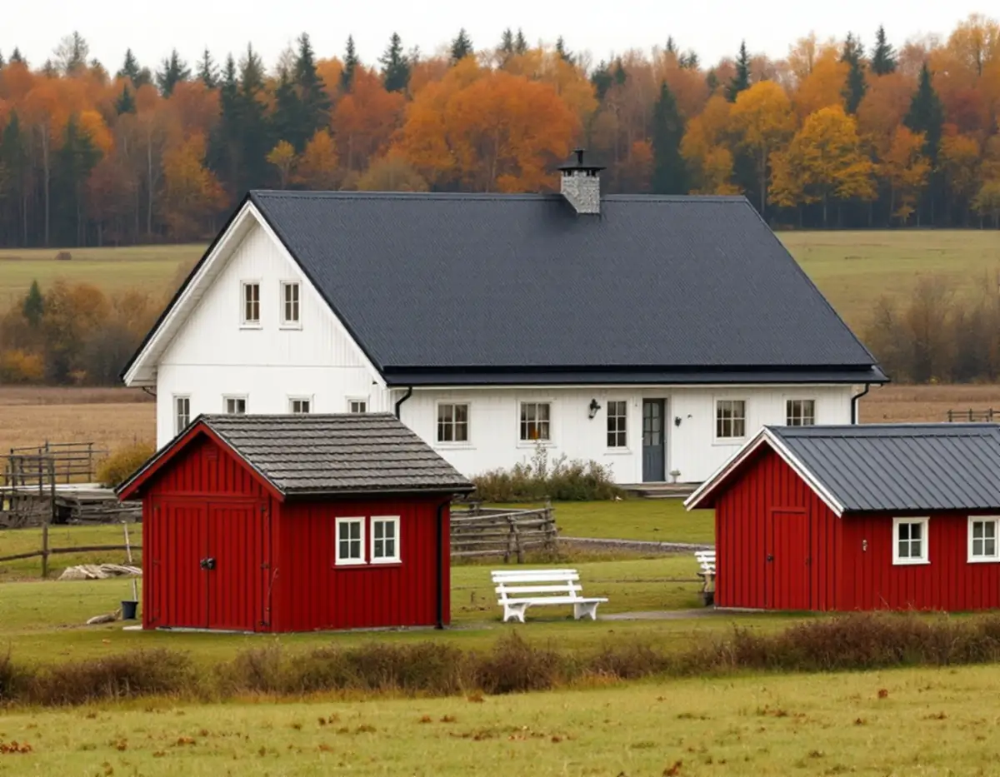
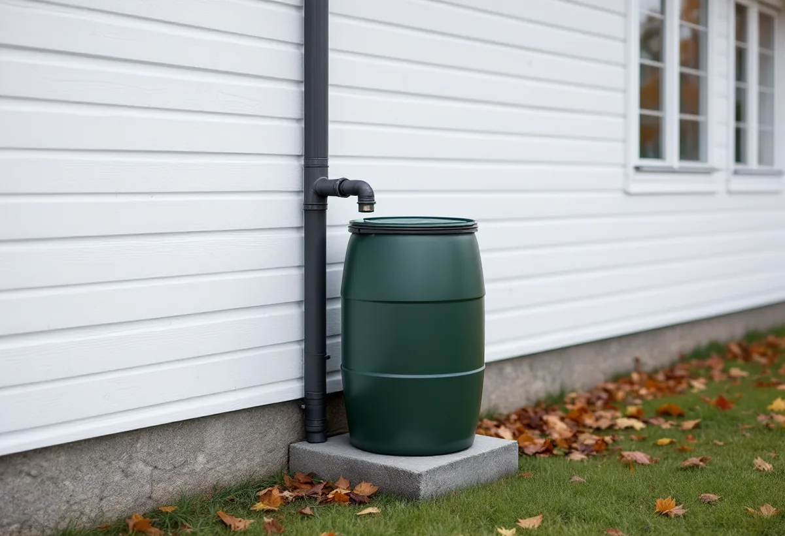

Platsbesök
Vi går igenom huvudtaket och tomtens mindre byggnader och ser var varje stuprör leder vattnet.
Vallentuna har omkring 9 300 bostäder i småhus enligt SCB, i tätorten och på en stor landsbygd, och på många tomter står också garage, förråd eller vedbod. Kommunfullmäktige antog i december 2024 en dagvattenstrategi som säger hur vatten från tak ska tas om hand. Geal Entreprenad AB byter hängrännor och stuprör, lägger plåttak och monterar beslag i Vallentuna, med gratis platsbesök och skriftligt kostnadsförslag.

Vallentunas dagvattenstrategi fastställdes av kommunfullmäktige den 2 december 2024. Den konkretiserar den dagvattenpolicy som gäller för alla kommuner inom Oxundaåns avrinningsområde och som tillämpas i hela Vallentuna. Strategin är skriven för kommunens egen planering, men den visar tydligt hur kommunen ser på vatten från tak.
Tak och andra hårdgjorda ytor ska enligt strategin inte anslutas ofördröjt till allmän dagvattenledning. Takdagvattnet ska ledas ut på genomsläpplig markyta eller infiltreras och fördröjas på annat sätt före anslutning. Öppna lösningar som gräsytor, regnträdgårdar och diken ska väljas i första hand, och stängda lösningar som stenkistor i andra hand.
Strategin skiljer också på olika slags dagvatten. Takdagvatten är inte lämpligt att blanda med orenat dagvatten från vägytor, eftersom vattnet från en väg innehåller mer föroreningar. För en villaägare betyder det att stupröret inte bör ledas mot uppfarten, där vattnet blandas med det som rinner av asfalten, utan mot en gräsyta.

På kommunens sida om dagvatten finns konkreta tips för villaägare. Ett enkelt sätt att bidra är att koppla stuprören till en eller flera regntunnor. Då rinner dagvattnet aldrig ner i brunnen och kan inte bidra till översvämning vid skyfall, och vattnet kan användas till bevattning när det är torrt.
Kommunen föreslår också att vattnet från taket leds ut till gräsmatta och rabatter med ränndalar eller regnvattenspridare, och att uppfarter och gångar får genomsläppliga material som grus, singel, hålsten eller marksten med genomsläppliga fogar. En vanlig gräsmatta kan fördröja och rena vatten från taket.
Vid stupröret är det plåtslagarens del som avgör om tipsen fungerar. Ett stuprör med en regnvattenavledare kan fylla tunnan och leda överskottet vidare ner i röret när tunnan är full, och den nedre delen kan avslutas med en utkastare mot en ränndal. Vi anpassar höjden efter tunnan och ser till att röret går att ta isär för rensning. Mer om rännor och stuprör finns under hängrännor och stuprör.
Kommunen beskriver en stor landsbygd med cirka 8 000 boende på landsbygderna och i de mindre orterna Lindholmen, Karby och Brottby, Kårsta, Ekskogen och Frösunda. På tomterna, både där och i tätorten, står ofta flera mindre byggnader. Kommunen räknar garage, carport, förråd, gäststuga, vedbod, växthus, bastu och båthus som komplementbyggnader.
Inom detaljplan krävs bygglov om den sammanlagda ytan överstiger 45 kvadratmeter eller en enskild byggnad överstiger 30 kvadratmeter. Utanför detaljplan är gränserna 65 och 50 kvadratmeter, och nockhöjden får inte vara över 4 meter för att bygga utan lov. Inom ett kulturhistoriskt särskilt värdefullt område krävs alltid bygglov.
Ett litet plåttak på en vedbod eller ett garage lever ofta ett hårdare liv än huvudtaket, med mossa, nedfallna grenar och rännor som ingen rensar. Vi byter plåt och rännor på befintliga komplementbyggnader och kan ge en ny vedbod eller bastu ett falsat eller profilerat plåttak med egen avvattning. Skatteverket skriver att komplementhus som garage och förråd kan höra till småhuset vid rotavdrag, men att det inte ges för att bygga en helt ny fristående byggnad som ett garage. Om snickeriet finns mer under snickare i Vallentuna.
Enligt kommunen krävs inte bygglov för fasadförändringar som ommålning, nytt tak eller nya fönster på ett en- eller tvåbostadshus. Ändringen ska ändå göras varsamt och anpassas till byggnadens värden. Ligger fastigheten inom ett kulturhistoriskt särskilt värdefullt område, eller är byggnaden själv särskilt värdefull, krävs alltid bygglov.
Krävs lov ska ansökan bland annat innehålla en fasadritning i skala 1:100 och en redovisning av utvändiga material och kulörer med NCS-koder. Byter du ett tegeltak mot plåt är det alltså bra att veta kulören tidigt. Äldre ritningar kan beställas ur kommunens arkiv. Om takets skick och omläggning i stort läser du under takrenovering i Vallentuna.
Vi går igenom huvudtaket och tomtens mindre byggnader och ser var varje stuprör leder vattnet.
Vi föreslår var takvattnet kan ledas ut på gräs, i regntunna eller mot ränndal.
Hus, garage och uthus prissätts var för sig i ett skriftligt kostnadsförslag.
Ny plåt och nya rännor monteras, med stuprörsdelar anpassade efter tunna eller utkastare.
Vi visar hur rännor och avledare rensas inför vintern.
Att reparera, rengöra eller byta ut plåttak, hängrännor och stuprör på ett småhus ger rotavdrag. Arbetet ska utföras i bostaden eller på tomten i nära anslutning till den. Avdraget är 30 procent av arbetskostnaden, högst 50 000 kr per person och år och högst 75 000 kr tillsammans med rutavdrag.
Regntunnor, plåt och annat material ger inget avdrag. Geal drar avdraget direkt på fakturan.
Hur stor takytan är på huset och på de mindre byggnaderna, om plåten byts eller bara rännor och beslag, vilka stuprörsdelar som behövs för tunnor och utkastare och hur långt det är till fastigheten. Efter ett gratis platsbesök får du ett skriftligt kostnadsförslag.
Plåttak, hängrännor och beslag.
Plåtslagare i Stockholm →Takbyte, takbesiktning och plåtarbeten.
Takläggare i Vallentuna →Villaområden och gårdar.
Takrenovering i Vallentuna →Inom eller utanför plan, avlopp och brunn.
Attefallshus i Vallentuna →Nytt våtrum, Roslagsvatten och egen brunn.
Badrumsrenovering i Vallentuna →Ritningar, grannar och kommunens mark.
Byggföretag i Vallentuna →Villor och grupphus från 1970-talet och framåt.
Fasadmålning i Vallentuna →Fritidshus, stationssamhällen och villor i Vallentuna.
Fasadrenovering i Vallentuna →Flygbuller, glasval och lov i Vallentuna.
Fönsterbyte i Vallentuna →Fönster i tegelvillan, fog och bågar.
Fönsterrenovering i Vallentuna →Golv på platta och golvvärme i villan.
Golvläggare i Vallentuna →Slipa och laga gamla golvplank.
Golvslipning i Vallentuna →Utbyggda kök, villor och gårdar.
Köksrenovering i Vallentuna →Gårdar, fritidshus och villor i Vallentuna.
Målare i Vallentuna →Uthus, uterum och fritidshus.
Snickare i Vallentuna →Lovfrågan, skorstenen och arkivet.
Takbyte i Vallentuna →Spännpapp och papperstapet.
Tapetsering i Vallentuna →Ritningar, nivåer och arkivet.
Tillbyggnad i Vallentuna →Radon när huset byggs om.
Totalrenovering i Vallentuna →